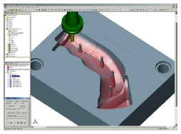
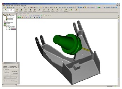
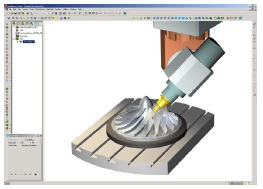
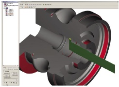
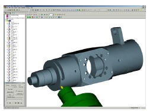

|
4.
3 Eksenden 5 Eksene Frezeleme
SolidCAM,
3 eksenden 5 eksene tüm freze iþlemlerini yapabilme yeteneðine
sahip bir program. Kullanýcý, SolidWorks modeli üzerinden
iþlenecek yüzeyleri seçebiliyor. SolidCAM'de üzerinde çalýþýlmasýný
istemediðiniz yüzeyleri seçebiliyorsunuz. Böylece üzerinde
iþlem yapýlacak ve yapýlmayacak yüzeyleri belirleyebiliyorsunuz.
3 eksen iþlemede birçok finiþ stratejisi de bulabilirsiniz.
|  |
|
Figür
10 - Diþi kalýbýn 3 eksen iþlenmesi |
Bunlar:
-
Paralel düzlem
- Sabit Z
- Zigzag
- Ýçten dýþa yada dýþtan içe spiral ve lineer spiral
- Radyal
- Dairesel
- Akýþ çizgisi eðrileri dahil olmak üzere eðriye dik ve paralellik
- Sýnýr iþleme
- Kalem freze
- 3B yan adým
- Dik ve düz alanlar için birleþik iþlemler
SolidCAM,
modelin dik ve düz yerlerini otomatik olarak tanýr. Böylece,
düzlemsel alanlarda paralel düzlem stratejisi, dik alanlarda
ise sabit Z stratejisi uygulanabilir. 2.5 eksende olduðu gibi
3 eksen iþlemlerde de kalan talaþý iþleyebilirsiniz. Kalan
talaþ, blok stok üzerinde yada 3B döküm modeli üzerinden iþlenebilir.
Ýþleme, sadece talaþ kalan bölgede yapýlýr. Kalan talaþýn
otomatik olarak iþlenmesi tüm iþleme çeþitlerinde büyük bir
kolaylýktýr fakat özellikle kompleks parçalarda çok önemlidir.
Böylece takýmýn büyüklük nedeniyle giremediði köþelerde kalan
talaþlar kolaylýkla takip edilebilir. Kalan talaþ iþlemlerinde
daha küçük çaplý bir takým seçilir, fakat takým yolu baþtan
hesaplanýr ve sadece talaþ kalan yerler iþlenir.
SolidCAM'deki
3B operasyonlarda, kalan talaþ hesabý, programýn içinde hazýrlanan
bir 3B model üzerinden yapýlýyor. Her iþleme adýmýndan sonra
kalan stok durumu güncelleniyor. Program, içinde hazýrlanan
modeli hedef model ile karþýlaþtýrarak malzeme üzerindeki
derinlikleri ve kalan talaþý her an hesaplar. Program içinde
hazýrlanan 3B model parçanýn 2B alanlarýný da içerir. SolidCAM,
model üzerindeki takým yollarýný hesaplarken stok ile hedef
arasýndaki farklarý gözden geçirir. Diyalog kutularý yardýmýyla
kullanýcý tüm geometri üzerinde ya da sadece kalan talaþ üzerinde
iþlem yapabilir.
NC
operasyonlarýnda stok görüntüsü görülebilir fakat iþleme esnasýnda
kalan talaþ gözükmez. Hesaplamalar MachineWorks ile yapýldýðýndan
bunlar sadece takým yolu oluþturulurken görülebilir. MachineWorks
ile malzeme derinliði dört ayrý renk ile görüntülenebilir.
Her renk belli bir aralýktaki malzeme kalýnlýðý ile iliþkilidir.
Dolayýsýyla renkli modele bakarak kullanýcý model üzerindeki
herhangi bir noktanýn yada yüzeyin derinliðini anlayabilir.
Renklerin malzeme kalýnlýðý aralýklarý deðiþtirilirse model
üzerindeki renkler de deðiþir.
Takým
yolunun ötelenmesi konusunda SolidCAM'de birçok yol sunuluyor.
Bunlar 2B ve 3B ötelemelerden oluþuyor ve öteleme miktarý
yüzeyde kalan talaþ yüksekliðine göre ya da radyal operasyonlar
için açý ile verilebiliyor. Bazý teknikleri de beraber kullanabilirsiniz,
mesela maksimum kalan talaþ yüksekliðine göre öteleme saðlanýrken
bu ötelemenin 2B'ta verdiðiniz öteleme deðerini aþmamasýný
saðlayabilirsiniz. 3B öteleme stratejisinin kullanýlmasý ileri
teknoloji bir seçenek ve pürüzsüz bir yüzey finiþ iþlemi yapabilmek
açýsýndan önemli. 3B öteleme seçeneði SolidCAM'de mevcut ve
pazardaki diðer ürünlerle rekabet edebilecek düzeyde.
SolidCAM'de
dalma kontrolü tüm hareketlerde yapýlmaktadýr ve takým yolu
dalma olmayacak þekilde çýkartýlmaktadýr. Eðer takým yolu
dalma olmayacak þekilde kýsaltýlmýþsa program bu bölümü kaydeder
ve takým yolu dosyasýný kýsaltýlmýþ olarak belirler. Hem 3
eksen hem de 5 eksen iþlerde takým, takým tutucu ve kafa çarpýþma
testinde hesaba katýlýr. Bazý yazýlýmlar sadece takým için
bu testi yapmaktadýr. Hem parça hem de baðlama aparatlarý
çarpýþma testinde hesaba katýlýr. Herhangi bir çarpýþma olduðu
zaman kullanýcý bu konuda uyarýlýr. Test, programýn içinde
hazýrlanan modelin, parça modeli ile karþýlaþtýrýlmasýyla
yapýlýr. Bir çarpýþma tespit edildiði zaman kullanýcý iþleme
müdahale edip dalma olmayacak þekilde iþleme stratejisini
düzeltebilir.
Kalýplarýn
iþlenmesinde yüksek hýzlý iþlemeler giderek büyük bir önem
kazanmaya baþladý. SolidCAM bu tip iþleme operasyonlarýný
da destekleyecek araçlara sahip. Bu iþlemler hem kabada hem
de finiþ iþlemlerinde uygulanabiliyor. SolidCAM'in yüksek
hýzlý kesimi destekleyen bazý araçlarý þunlardýr:
-
Tüm köþelere radyus atma
- Daha yumuþak geçiþler olmasý açýsýndan takým yoluna döngüler
ekleme
- Birbirine çok yakýn takým yollarýna radyuslu geçiþler koyma
- Birkaç tane parçayý ardýþýk olarak yüksek hýzda iþleyebilmek
için çoklu parça desteði
- Yuvarlatýlmýþ takým yolu ile lineer finiþ desteði
- Tek veya iki yönlü profil ofsetlerinden takým yolu oluþturma
Solidcam,
3+2 pozisyonlamalý iþlemede ileri bir destek yeteneði sunmaktadýr.
Bu operasyonda, 2 eksen eðilebilen ve dönen bir tabla, 3 eksen
iþleme merkezine eklenmiþtir. Böylece iþlenecek parçalar,
tablayý eðerek ve parçalarý döndürerek deðiþik açýlarda iþlenebilir.
Bu tarz iþleme özellikle 4 ve 5 eksen iþleme merkezlerinde
çok-taraflý parçalarýn kesilmesinde önemlidir. SolidCAM, SolidWorks
modelini kullanýcý tarafýndan belirlenen iþleme düzlemlerinde
döndürür ve 3B iþleme için gerekli bütün eðmeleri ve döndürmeleri
otomatik olarak hesaplar. Ayrýca esnek ayarlamalara izin verir
ve özel mengeneli baðlama aparatlarýna gereksinimi azaltýr.
Herhangi bir yüzeyde iþleme operasyonu tanýmlayabilir ve bu
operasyonlarý SolidCAM'in takým yolu simülasyonlarý ile kontrol
edebilirsiniz. SolidCAM de modelin herhangi bir yerinde birden
fazla sýfýr noktasý belirleyebilirsiniz.
|  |
|
Figür
11 - Bir uçak parçasýnýn sürekli 5 eksen iþlenmesi |
Sürekli
5 eksen iþleme, bu makinelerin takýmlarýnýn ücretleri düþmeye
devam ettikçe ve saðladýklarý yararlar gerekli hale geldikçe
daha yaygýn hale gelmeye baþladý. Bu pazar gereksinimini karþýlamak
için, SolidCAM, ModuleWorks'ten bir sürekli 5 eksen iþleme
modülünün lisansýný aldý. Bu firma yalnýzca SolidWorks'ün
içinde çalýþabilen yazýlýmlar yazan bir Alman firmasýdýr.
Son kullanýcýya ürün satmazlar. ModuleWorks pazarda tanýnmaya
baþladýkça, SolidWorks ve birçok CAM yazýlýmý satýcýlarý ModuleWorks'ü
kendi 5 eksen ürünleri gibi sunmaya baþladý. SolidCAM kullanýcýlarýnýn
yararlanabileceði bu sürekli 5 eksen iþleme stratejileri aþaðýdaki
baþlýklar halindedir:
-
Paralel düzlem
- Bir eðriyi izleme ve eðriye yada düzleme paralel yada normal
kesme
- Ýzdüþümü alýnmýþ bir eðri boyunca kesme
- Eðriler ve yüzeyler arasýnda geçiþ yapma
- Takýmý sabit bir açýyla tutup kesme
- Takýmý 90 derece eðerek kesim yapma
3
eksen iþlemede olduðu gibi, kontrol yüzeyleri oluþturulabilir
ve bu yüzler veya yüzeylerde iþleme engellenebilir. Kalan
malzeme iþlemesi ve SolidWorks ile tam uyum 5 eksen modülünde
de ayný þekilde saðlanmaktadýr.
|  |
| Figür
12 - Bir türbin kanadýnýn sürekli 5 eksen iþlenmesi |
Makine
simülasyonundaki görsellik mükemmel denilebilecek seviyede.
Makine elemanlarýnýn tamamý da ayný parça ve kesme takýmý
gibi görülebilmektedir. Çarpýþma testi için takým tutucusunu
takýmýn parçasý gibi gösterebilmek mümkün. Parçada olasý bir
dalma ortaya çýktýðýnda nerede olduðunu da göstermektedir.
Eðer böyle bir durum ortaya çýkarsa, kullanýcý dalmayý önleyebilecek
birçok opsiyona sahiptir. Böylece yazýlým kullanýcýya kontrol
saðlamakla beraber hatayý da düzeltme imkaný vermektedir.
Opsiyonlar þu þekilde sýralanabilir:
-
Takýmý dalma bölgesinden uzaklaþtýrmak
- Dalmayý önlemek için takýmý eðmek
- Dalma oluþan yerleri býrakmak
- Takým yolu hesaplanmasýný durdurmak
ModuleWoks'ü
kullanmak SolidCAM ürün geliþimi kaynaklarýný üst seviyeye
taþýmakla beraber SolidCAM'i rekabet seviyesi yüksek bir 5
eksen ürünü haline getirmektedir.
5.
Torna ve C-eksen Torna
SolidCAM,
torna, C-eksen torna ve kanal açma da güçlü bir kabiliyete
sahiptir. Frezedeki gibi kalan talaþý iþleme kabiliyeti bütün
torna iþlemlerinde vardýr. Kullanýcý sadece kalan malzemenin
olduðu alanlarý yada bütün parçayý tornalayabilir. Frezedeki
gibi SolidWorks'teki parça SolidCAM ortamý ile tamamen beraber
çalýþýr ve parçadaki deðiþiklikler tornadaki takým yollarýna
otomatik olarak yansýr. Geometri deðiþtirildiðinde bu deðiþiklikten
etkilenen iþleri yazýlým kullanýcýya bildirir.
Kullanýcý
SolidCAM torna ve kanal açmada takýmlarý tamamen kontrol edebilir.
SolidCAM torna iþleme döngülerinin hepsini destekler. Kullanýcý
ister torna iþleme döngülerinin kullanýldýðý kýsa G kodunu
isterse de uzun G kodunu seçebilir. Torna unsurlarý þunlarý
yapabilmenizi saðlar; ilerleme hýzýnýzý sabit yüzey hýzý olacak
þekilde ayarlamak, ilerleme hýzýný herhangi bir bölüm sýnýrlarý
için ayarlama, kullanýcýlar için takým yolu ortasýnda istenen
hýzý verme, takýmýn bekleme süresinde iz yapmasýný önlemek
için takýmý profil sonuna geldiðinde geri çýkartma ve takým
deðiþtirmeler de dahil olmak üzere toplam çevrim zamanýný
hesaplama. Kanal açma için SolidCAM, ISCAR'ýn ileri iþleme
teknolojisi olan Turn-Groove teknolojisi de dahil olmak üzere
çok sayýdaki takým þekillerini destekler. SolidCAM yazýlýmýnda
ISCAR'ýn Turn-Groove takým kütüphanesi de mevcuttur.
|  |
|
Figür
13 - ISCAR CUT-GRIP takýmý ile tornalama |
C-eksen
tornalar giderek önemli bir iþleme fonksiyonu oluyor ve artýk
nerdeyse bütün tornalar C-eksen tornaya çevriliyor. Ayný takým
ile torna ve frezeyi ayný anda yapabilme kabiliyeti seri üretim
operasyonlarýnda oldukça önemlidir ve genel amaçlý makinelerde
istenmektedir. SolidCAM, bu tür takýmlarý, C-eksen torna iþlemelerinde
destekleyen az sayýdaki CAM yazýlýmý satýcýlarýndan biridir.
SolidCAM'e
entegre edilmiþ C-eksen torna kabiliyeti ayrý bir modülde
sunulmaktadýr. Tornalama ve frezeleme operasyonlarý ayný ortamda
programlanmýþlardýr. Programýn çýktýsý post-iþlemcide tek
bir program olarak çýkar. Yazýlým koordinat sistemi için 0
noktasýný belirler. Ýþlemler katý model üzerinde belirtilir.
Frezeleme ve tornalama ayný ayna üzerinde gerçekleþtirilir.
C-eksen torna operasyonun üç þekli vardýr.
-
XZC C-eksen tona
- XYZC C-eksen tona
- XYZCB C-eksen tona
|  |
|
Figür
14 - C-eksen tornalama |
3-Eksen
frezelemede olduðu gibi bütün programlama operasyonlarý kaydedilebilir
ve iþlem yada þablonlar oluþturulabilir. Bu þablonlar sonradan
kullanmak için kaydedilebilirler.
Þu
anda sub spindle yada back spindle SolidCAM C-eksen torna
ortamýnda programlanamamakta. Eðer gerekirse, ayrý ayrý programlanýp
daha sonra post prosesör ile birleþtirilip diðer C-eksen torna
operasyonlarý ile senkronize edilebilir.
Ayrýca
SolidCAM, tek bir ayna üzerinde iki tane kafanýn sürekli olarak
iþleme yaptýðýdengelenmiþ 4 eksen tornalar þu anda desteklememekte.
Bu yüksek derecede program senkronizasyonu gerektirmektedir.
6. Takýmyolu Simülasyonu ve Takým Kontrolü
SolidCAM,
üç ayrý düzeyde simülasyon tekniði sunmaktadýr. Basit takým
yolu simülasyonu ve 2B simülasyon programýn içinde geliþtirilmiþtir.
Ek olarak, SolidCAM 3B simülasyonlar için MachineWorks programýný
kendi içinde lisanslamýþtýr. Bu program katý üzerinde takým
yolu doðrulamasý ve simülasyonunun yapýlmasýný saðlar ve SolidCAM
kullanýcýlarýnýn en çok kullandýklarý simülasyon türüdür.
MachineWorks, takým yolu çýkarma konusunda endüstride bir
standart olmuþ durumdadýr. Birçok CAM yazýlým þirketi MachineWorks'ü
lisanslamýþ olup NC yazýlýmlarýnda bu programý kullanmaktadýr.
MachineWorks'te
simülasyon, G-kodlarý post prosesörünce hesaplanmadan önce
yapýlmaktadýr. Bazý kullanýcýlar kodlarýn post edildikten
sonraki halini görememekten þikayet etmektedir. Simülasyon
esnasýnda parçalar döndürülebilir. 5 eksen operasyonlarda
dahi parça, baðlama aparatlarý ve hatta tezgahta simülasyonda
görüntülenebilir. 2 ve 3 eksen operasyonlarda tezgah görüntülenemez.
SolidCAM,
kendi post prosesörünü geliþtirmiþtir. Bu pek de alýþýlmýþ
bir þey deðil çünkü diðer CAM yazýlým þirketlerinden çoðu
ayrý post prosesör alanýnda uzmanlaþmýþ bazý markalarýn yazýlýmlarýný
lisanslayarak kullanmaktadýr. Bununla birlikte kendi ürününü
geliþtirerek SolidCAM tüm iþlem üzerinde daha fazla kontrol
kazanmaktadýr.
SolidCAM
post üreteci Basic'e benzer bir dilde hazýrlanmýþtýr. Kullanýcýnýn
postu geliþtirmesi için herhangi bir sihirbaz ya da grafik
tabaný bulunmamaktadýr. Sistemle beraber kullanýcýnýn ihtiyacý
olan post prosesör saðlanmaktadýr. Post prosesörler SolidCAM
distribütörleri tarafýndan da özelleþtirilebilmektedir. Ek
postlar SolidCAM distribütörleri tarafýndan hazýrlanabilir
ve genelde bu servis ücretlidir. Sadece birkaç müþteri kendi
post prosesörlerini hazýrlamaktadýr. G kodlarý post tarafýndan
oluþturulduktan sonra ayrýca üzerinde deðiþiklik yapmaya gerek
kalmaksýzýn tezgaha gönderilebilir.
Birçok
diðer CAM sisteminin aksine, SolidCAM, CL dosyasýný direk
oluþturmamaktadýr. Bu dosyayý post prosesör oluþturabilir.
Bunun yerine SolidCAM sadece kendine özel iç kodlar oluþturur.
Bu kod parametre kodu ya da P kod olarak adlandýrýlýr. SolidCAM,
kendi P kodlarýnýn CL dosyasýna göre daha verimli olduðunu
düþünmektedir. Alt programlar P kodu içerisine oluþturulmuþtur.
Eðer bir operasyon birçok aþamada yer alacaksa komutlar her
aþamada oluþturulmak yerine sadece bir kere oluþturulur.
SolidCAM'in
program çýktýsý da verimli. Eðer ayný operasyon birkaç kere
kullanýlacaksa komutlar çýkýþa sadece bir kere yazýlýr, dolayýsýyla
program uzunluðu azalýr. Diðer sistemler de komutlar genelde
tekrar eder.
7.
Ürün Planlamalarý
SolidCAM'in
yakýn gelecekteki ürün geliþtirme planlarý þunlardýr:
- Kalýp iþlemeyi destekleyen 3 eksen freze kabiliyetlerini geliþtirmek
- 2.5 eksen freze kabiliyetlerine daha fazla otomasyon eklemek
- Sürekli 5 eksen modülü üzerinde geliþtirmelere devam etmek
- C-eksen torna'ya 2 iþ mili ve 2 ayna desteði eklemek
- Tüm operasyonlar için tezgah simülasyonu eklemek
- Kütüphane tabanlý iþleme yeteneklerini arttýrmak
|